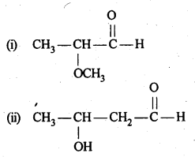
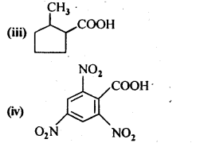
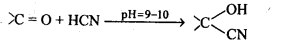

NCERT Solutions For Class 12 Chemistry Chapter 12 Aldehydes Ketones and Carboxylic Acids
Topics and Subtopics in NCERT Solutions for Class 12 Chemistry Chapter 12 Aldehydes Ketones and Carboxylic Acids:
| Section Name | Topic Name |
| 12 | Aldehydes, Ketones and Carboxylic Acids |
| 12.1 | Nomenclature and Structure of Carbonyl Group |
| 12.2 | Preparation of Aldehydes and Ketones |
| 12.3 | Physical Properties |
| 12.4 | Chemical Reactions |
| 12.5 | Uses of Aldehydes and Ketones |
| 12.6 | Nomenclature and Structure of Carboxyl Group |
| 12.7 | Methods of Preparation of Carboxylic Acids |
| 12.8 | Physical Properties |
| 12.9 | Chemical Reactions |
| 12.10 | Uses of Carboxylic Acids |
NCERT INTEXT QUESTION
12.1. Write the structures of the following compounds:
(i) α-Methoxypropionaldehyde
(ii) 3-Hydroxybutanal
(iii) 2-Hydroxycyclopentane carbaldehyde
(iv) 4-OxopentanaI
(v) Di-sec.butylketone
(vi) 4-fluoroaeetophenone
Ans:


12.2. Write the structures of the products of the following reactions:

Ans:

12.3. Arrange the following compounds in increasing order of their boiling points:
CH3CHO, CH3CH2OH, CH3OCH3, CH3CH2CH3
Ans: The order is : CH3CH2CH3 < CH3OCH3 < CH3CHO <CH3CH2OH
All these compounds have comparable molecular masses CH3CH2OH undergoes extensive intermolecular Il-bonding and thus its b.pt. is the highest. CH3CHO is more pdlar than CH3OCH3 so that dipole-dipoie interactions in CH3CHO are greater than in CH3OCH3. Thus, b.pt. of CH3CHO > CH3OCH3. CH3CH2CH3 has only weak van der waals forces between its molecules and hence has the lowest b.pt.
12.4. Arrange the following carbonyl compounds in increasing order of their reactivity in nucleophilic addition reactions :
(a) Ethanal, propanal, propanone, butanone
(b) Benzaldehyde, p-tolualdehyde, p-nitrobenzaldehyde, acetophenone
Ans: (a) The increasing order of reactivity of the carbonyl compounds towards nucleophilic addition reactions is :
butanone < propanone < propanal < ethanal
The reactivity is based upon two factors. These are: steric factors and electronic factors.
(b) The increasing order of reactivity is :
acetophenone < p-tolualdehyde < benzaldehyde < p-nitrobenzaldehyde
Explanation: Acetophenone being a ketone is the least reactive towards nucleophilic addition. All others are aldehydes. Among them, p-tolualdehyde is less reactive than benzaldehyde because CH3 group present at the para position w.r.t. -CHO group will increase the electron density on the carbonyl carbon atom due to hyper conjugation effect. As a result, the nucleophile attack occurs to lesser extent as compared to benzaldehyde.

In p-nitrobenzaldehyde, the nitro group has an opposing effect. It is electron withdrawing in nature due to -I effect as well as -R effect. The electron density on the carbonyl carbon atom decreases and this favours the nucleophile attack.

12.5. Predict the products of the following reactions:


Ans:

12.6. Give the 1UPAC names of the following compounds:
(i) PhCH2CH2COOH
(ii) (CH3)2 C=CHCOOH

Ans: (i) 3 – Phenylpropanoic acid
(ii) 3 – Methylbut-2-enoic acid
(iii) 2-Methylcyclohexanecarboxylic acid
(iv) 2,4,6 – Trinitrobenzoic acid
12.7. Show how each of the following compounds can be converted into benzoic acid.
(i) Ethylbenzene
(ii) Acetophenone
(iii) Bromobenzene
(iv) Phenylethene (styrene)
Ans:


12.8. Which acid from each of the following pairs would you expect to be a stronger acid?
(i) CH3COOH or CH2FCOOH
(ii) CH2FCOOH or CH2ClCOOH
(iii) CH2FCH2CH2COOH or CH3CHFCH2COOH

Ans:
Explanation: CH3 group with +I effect increases the electron density on the oxygen atom in O – H bond in the carboxyl group and cleavage of bond becomes diffcult. It therefore, decreases the acidic strength. The F atom has very strong -I effect, i.e., electron withdrawing influence. It decreases the electron density on the oxygen atom and cleavage of bond becomes easy. The acidic character therefore, increases. It is further related to the
- No. of F atoms present in the molecule.
- Relative position of the F atom in the carbon atom chain.
In the light of the above discussion.
(i) CH2FCOOH is a stronger acid.
(ii) CH2FCOOH is a stronger acid.
(iii) CH3CHFCH2COOH is a stronger acid.

NCERT EXERCISES
12.1. What is meant by the following terms? Give an example of the reaction in each case.
(i) Cyanohydrin
(ii) Acetal
(iii) Semicarbazone
(iv) Aldol
(v) Hemiacetal
(vi) Oxime
(vii) Ketal
(viii) Imine
(ix) 2,4-DNP derivative
(x) Schiff’s base.
Ans: (i) Cyanohydrin: gem-Hydroxynitriles, i.e., compounds possessing hydroxyl and cyano groups on the same carbon atom are called cyanohydrins. These are produced by addition of HCN to aldehydes or ketones in a weakly basic medium.

(ii) gem – Dialkoxy compounds in which the two alkoxy groups are present on the terminal carbon atom are called acetals. These are produced by the action of an aldehyde with two equivalents of a monohydric alcohol in presence of dry HCl gas.

These are easily hydrolysed by dilute mineral acids to regenerate the original aldehydes. Therefore, these are used for the protection of aldehyde group in organic synthesis.
(iii) Semicarbazones are derivatives of aldehydes and ketones and are produced by action of semicarbazide on them in acidic medium.

(iv) Aldols are P-hydroxy aldehydes or ketones and are produced by the condensation of two molecules of the same or one molecule each of two different aldehydes or ketones in presence of a dilute aqueous base. For example,

(v) gem – Alkoxyalcohols are called hemiacetals. These are produced by addition of one molecule of a monohydric alcohol to an aldehyde in presence of dry HCl gas.
(vi) Oximes are produced when aldehydes or ketones react with hydroxyl amine in weakly acidic medium.

(vii) Ketals are produced when a ketone is heated with dihydric alcohols like ethylene glycol in presence of dry HCl gas or /3-toluene sulphonic acid (PTS).

These are easily hydrolysed by dilute mineral acids to regenerate the original ketones. Therefore, ketals are used for protecting keto groups in organic synthesis.
(viii) Compounds containing -C = N – group are called imines. These are produced when aldehydes and ketones react with ammonia derivatives.

(ix)2, 4-Dinitrophenyl hydrazone (i.e., 2,4-DNP derivatives) are produced when aldehydes or ketones react with 2,4-dinitrophenyl hydrazine in weakly acidic medium.

(x) Aldehydes and ketones react with primary aliphatic or aromatic amines to form azomethines or SchifFs bases.

12.2. Name the following compounds according to IUPAC system of nomenclature:
(i) CH3CH (CH3)—CH2 CH2—CHO
(ii) CH3CH2COCH(C2H5)CH2CH2Cl
(iii) CH3CH=CHCHO
(iv) CH3COCH2COCH3
(v) CH3CH(CH3)CH2C(CH3)2COCH3
(vi) (CH3)3CCH2COOH.
(vii) OHCC6H4CHO-p
Ans: (i) 4-Methyl pentanal
(ii) 6-Chloro-4-ethylhexan-3-one
(iii) But-2-en-l-al
(iv) Pentane-2,4-dione
(v) 3,3,5-Trimethyl-hexan-2-one
(vi) 3,3-Dimethyl butanoic acid
(vii) Benzene-1,4-dicarbaldehyde
12.3. Draw the structures of the following compounds.
(i) 3-Methylbutanal
(ii) p-Methylbenzaldehyde
(iii) 4-Chloropentan-2-one
(iv) p, p’-Dihydroxybenzophenone
(v) p-Nitropropiophenone
(vi) 4-Methylpent-3-en-2-one.
(vii) 3-Bromo-4-phenylpentanoic acid
(viii) Hex-2-en-4-ynoic acid
Ans:

12.4. Write the IUPAC names of the following ketones and aldehydes. Wherever possible, give also common names.
(i) CH3CO(CH2)4CH3
(ii) CH3CH2CH BrCH2CH(CH3)CHO
(iii) CH3(CH2)5CHO
(iv) Ph—CH=CH—CHO

Ans:

12.5. Draw structures of the following derivatives:
(i) The 2,4-dinitrophenylhydrazone of benzaldehyde
(ii) Cydopropanone oxime
(iii) Acetaldehydedimethylacetal
(iv) The semicarbazone of cyclobutanone
(v) The ethylene ketal of hexan-3-one
(vi) The methyl hemiacetal of formaldehyde
Ans:

12.6. Predict the product when cyclohexanecarbaldehyde reacts with following reagents :
(i) C6H5MgBr followed by H30+
(ii) Tollen’s reagent
(iii) Semicarbazide in the weakly acidic medium
(iv) Excess of ethanol in the presence of acid
(v) Zinc amalgam and Cyclohexanecarbaldehyde Semicarbazide
Ans:


12.7. Which of the following compounds would undergo aldol condensation, which the Cannizzaro reaction and which neither? Write the structures of the expected products of aldol condensation and Cannizzaro reaction.
(i) Methanal
(ii) 2-Methylpentanal
(iii) Benzaldehyde.
(iv) Benzophenone
(v) Cyclohexanone
(vi) 1-Phenylpropanone
(vii) Phenylacetaldehyde
(viii) Butan-l-ol 1
(ix) 2,2-Dimethylbutanal
Ans: 2-Methylpertfanal, cyclohexanone, 1-phenylpropanone and phenylacetaldehyde contain one or more a-hydrogen and hence undergo aldol condensation. The reactions and the structures of the expected products are given below:


12.8. How will you convert ethanal into the following compounds?
(i) Butane-1,3-diol
(ii) But-2-enal
(iii) But-2-enoic acid
Ans:

12.9. Write structural formulas and names of four possible aldol condensation products from propanal and butanal. In each case, indicate which aldehyde acts as nucleophile and which as electrophile.
Ans:

12.10. An organic compound with the molecular formula C9H10O forms 2,4-DNP derivative, reduces Tollen’s reagent, and undergoes Cannizzaro reaction. On vigorous oxidation, it gives 1,2-benzenedicarboxylic acid. Identify the compound.
Ans: Since the given compound with molecular formula C9H10O forms a 2,4-DNP derivative and reduces Tollen’s reagent, it must be an aldehyde. Since it undergoes Cannizzaro reaction, therefore, CHO group is directly attached to die benzene ring.
Since on vigorous oxidation, it gives 1, 2-benzene dicarboxylic acid, therefore, it must be an ortho- substituted benzaldehyde. The only o-substituted aromatic aldehyde having molecular formula C9H10O is o-ethyl benzaldehyde. Ail the reactions can now be explained on the basis of this structure.

12.11. An organic compound (A) (molecular formula C8H16O2) was hydrolysed with dilute sulphuric acid to give a carboxylic acid (B} and an alcohol (C). Oxidation of (C) with chromic acid produced (B). (Q on dehydration gives but-l-ene. Write equations for the reactions involved.
Ans: Since an ester A with molecular formula C8H16O2 upon hydrolysis gives carboxylic acid B and the alcohol C and oxidation of C with chromic acid produces the acid B, therefore, both the carboxylic acid B and alcohol C must contain the same number of carbon atoms.
Further, since ester A contains eight carbon atoms, therefore, both the carboxylic acid B and the alcohol C must contain four carbon atoms each.
Since the alcohol C on dehydration gives but-l-ene, therefore, C must be a straight chain alcohol, i.e., butan-l-ol.
If C is butan-l-ol, then the acid B must be butanoic acid and the ester A must be butyl butanoate.The chemical equations are as follows:

12.12. Arrange the following in increasing order of the property indicated :
(i) Acetaldehyde, Acetone, Di tert. butyl ketone, Methyl tert. butyl ketone (reactivity towards HCN). (C.B.S.E. Sample Paper 2011, 2015, C.B.S.E. Delhi 2012)
(ii) CH3CH2CH(Br)COOH, CH3CH(Br)CH2COOH, (CH3)2CHCOOH, CH3CH2CH2COOH (acid strength) (C.B.S.E. Delhi2008)
(iii) Benzoic acid, 4-Nitrobenzoic acid, 3, 5-Dinitrobenzoic acid, 4-Methoxybenzoic acid (acid strength) (C.B.S.E. Sample Paper 2011, 2015; C.B.S.E. Delhi 2012, C.B.S.E. Outside Delhi 2015, Rajasthan Board 2015)
Ans: (i) Cyanohydrin derivatives are formed as a result of the reaction in which the nucleophile (CN– ion) attacks the carbon atom of the carbonyl group. The order of reactivity
- decreases with increase in +I effect of the alkyl group.
- decreases with increase in steric hindrance due to the size as well as number of the alkyl groups. In the light of the above information, the decreasing order of reactivity is :

(ii) We know that alkyl group with +I effect decreases the acidic strength. The +I effect of isopropyl group is more than that of n-propyl group. Similarly, bromine (Br) with -I-effect increases the acidic strength. Closer its position in the carbon atom chain w.r.t., carboxyl (COOH) group, more will be its -I-effect and stronger will be the acid. In the light of this, the increasing order of acidic strength is :
(CH3)2CHCOOH< CH3CH2CH2COOH < CH3CH(Br)CH2COOH < CH3CH2CH(Br) COOH
(iii) We have learnt that the electron donating group (OCH3) decreases the acidic strength of the benzoic acid. At the same time, the electron withdrawing group (N02) increases the same. Keeping this in mind, the increasing order of acidic strength is:

12.13. Give simple chemical tests to distinguish between the following pairs of compounds.
(i) PropanalandPropanone
(ii) Acetophenone and Benzophenone
(iii) Phenol and Benzoic acid
(iv) Benzoic acid and Ethyl benzoate
(v) Pentan-2-one and Pentan-3-one
(vi) Benzaldehyde and Acetophenone.
(vii) EthanalandPropanal
Ans:


12.14. Row will you prepare the following compounds from benzene? You may use any inorganic reagent and any organic reagent having not more than one carbon atom.
(i) Methyl benzoate
(ii) m-nitrobenzoic acid
(iii) p-nitrobenzoic acid
(iv) Phenylaceticacid
(v) p-nitrobenzaldehyde
Ans:


12.15. How will you bring about the following conversions in not more than two steps?
(i) PropanonetoPropene
(ii) Benzoic acid to Benzaldehyde
(iii) Ethanol to 3-Hydroxybutanal
(iv) Benzene to m-Nitroacetophenone
(v) Benzaldehyde to Benzophenone –
(vi) Bromobenzeneto 1-PhenylethanoL
(vii) Benzaldehyde to 3-Phenylpropan-1-ol.
(viii) Benzaldehyde to α Hydroxyphenylacetk acid
(ix) Benzoic acid to m-Nitrobenzy 1 alcohol
Ans:


12.16. Describe the following:
(i) Acetylation
(ii) Cannizzaro reaction
(iii) Cross aldol condensation
(iv) Decarboxylation
Ans: (i) Acetylation refers to the process of introducing an acetyl group into a compound namely, the substitution of an acetyl group for an active hydrogen atom. Acetylation is usually carried out in presence of a base such as pyridine, dimethylanitine, etc.

(ii) Cannizzaro reaction : Aldehydes which do not contain an a-hydrogen atom, when treated with concentrated alkali solution undergo disproportionation, i.e., self oxidation reduction. As a result, one molecule of the aldehyde is reduced to the corresponding alcohol at the cost of the other which is oxidised to the corresponding carboxylic acid. This reaction is called Cannizzaro reaction.

(iii) Cross aldol condensation: Aldol condensation between two different aldehydes is called cross aldol condensation.If both aldehydes contain a-hydrogens, It gives a mixture of four products.

(iv) Decarboxylation: The process of removal of a molecule of CO2 from a carboxylic acid is called decarboxylation. Sodium salts of carboxylic acids when heated with soda-lime undergoes decarboxylation to yield alkanes.

12.17. Complete each synthesis by giving missing starting material, reagent or products.

Ans:


12.18. Give plausible explanation for each of the following:
(i) Cyclohexanone forms cyanohydrin in good yield but 2,2, fctrimethylcyclohexanone does not
(ii) There are two – NH2 groups in semicarbazide. However, only one is involved in the formation of semicarbazones.
(iii)During the preparation of esters from a carboxylic acid and an alcohol in the presence of an acid catalyst, the water or the ester should be removed as soon as it is formed.
Ans:

The yield of second reaction is very low because of the presence of three methyl groups at ex-positions with respect to the C = O, the nucleophilic attack by the CN– ion does not occur due to steric hinderance. Since there is no such steric hindrance in cyclohexanone, therefore, nucleophilic attack by the CN– ion occurs readily and hence cyclohexanone cyanohydrin is obtained in good yield.

Although semicarbazide has two – NH2 groups but one of them (i.e., which is directly attached to C = O) is involved in resonance as shown above. As a result, electron density on N of this -NH2 group decreases and hence it does not act as a nucleophile. In contrast, the other -NH2 group (i.e.. attached to NH) is not involved in resonance and hence lone pair of electrons present on N atom of this -NH2 group is available for nucleophilic attack on the C = O group of aldehydes and ketones.’
(iii) The formation of esters from a carboxylic acid and an alcohol in presence of an acid catalyst is a reversible reaction.

Thus to shift the equilibrium in the forward direction, the water or the ester formed should be removed as fast as it is formed.
12.19. An organic compound contains 69-77% carbon, 11-63 % hydrogen and rest oxygen. The molecular mass of the compound is 86. It does not reduce Tottens’ reagent but forms an addition compound with sodium hydrogensulphite and give positive iodoform test. On vigorous oxidation, it gives ethanoic and propanoic acid. Write the possible structure of the compound.
Ans:

Since the compound form sodium hydrogen sulphite addition product, therefore, it must be either an – aldehyde or methyl/ cyclic ketone. Since the compound does not reduce Tollens’ reagent therefore, it cannot be an aldehyde. Since the compound gives positive iodoform test, therefore, the given compound is a methyl ketone. Since the given compound on vigorous oxidation gives a mixture ofethanoic acid and propanoic acid, therefore, the methyl ketone is pentan-2-one, i.e.,

12.20. Although phenoxide ion has more number of resonating structures than carboxylate ion, carboxylic acid is a stronger acid than on phenol. Why?
Ans: Consider the resonating structures of carboxylate ion and phenoxide ion.

In case of phenoxide ion, structures (V – VII) carry a negative charge on the less electronegative carbon atom.Therefore, their contribution towards the resonance stabilization of phenoxide ion is very small.
In structures I and II, (carboxylate ion), the negative charge is delocalized over two oxygen atoms while in structures III and IV, the negative charge on the oxygen atom remains localized only the electrons of the benzene ring are delocalized. Since delocalization of benzene electrons contributes little towards the stability of phenoxide ion therefore, carboxylate ion is much more resonance stabilized than phenoxide ion. Thus, the release of a proton from carboxylic acids is much easier than from phenols. In other words, carboxylic acids are stronger acids than phenols.
More Resources for CBSE Class 12: